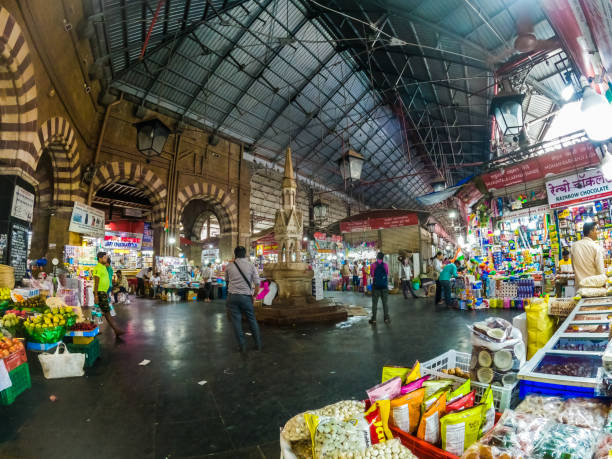

Crawford Market
Crawford Market, officially known as Mahatma Jyotiba Phule Market, is one of Mumbai's most historic wholesale markets. Built in 1869, it remains a bustling hub of trade and commerce.
History
Named after Arthur Crawford, Mumbai's first Municipal Commissioner, the market was donated to the city by Cowasji Jehangir. The building was the first in India to be lit up by electricity.
Architecture
The market is built in the Norman and Flemish architectural styles, with a blend of British and local influences. The building features a frieze designed by John Lockwood Kipling (Rudyard Kipling's father), depicting Indian farmers. The market's iconic fountain, elaborate iron pillars, and stone carvings make it a remarkable heritage structure.